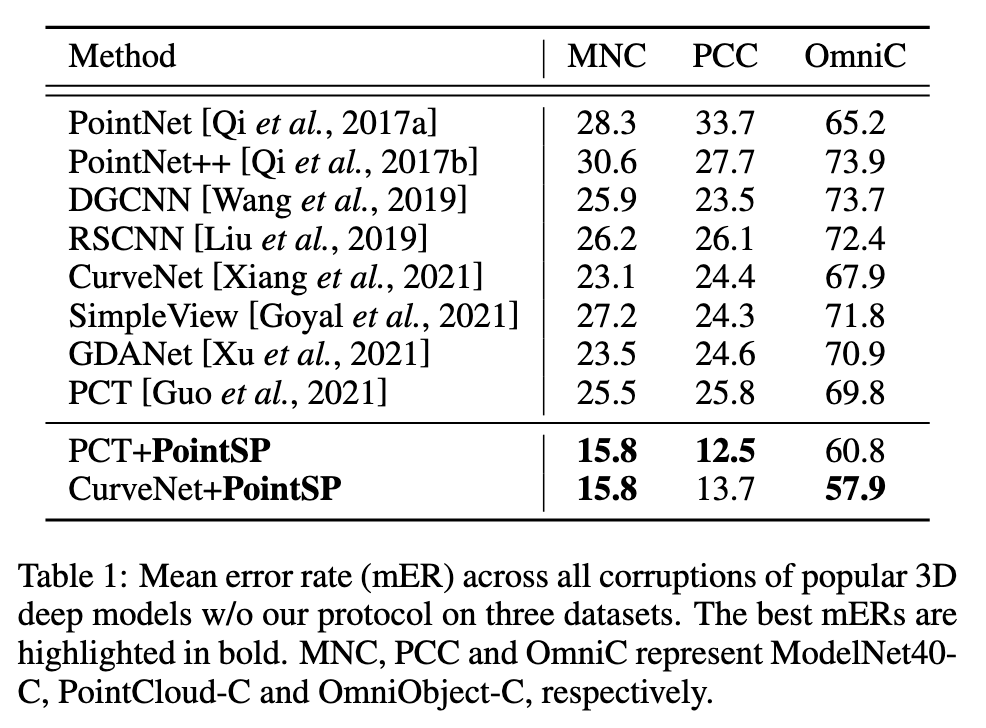
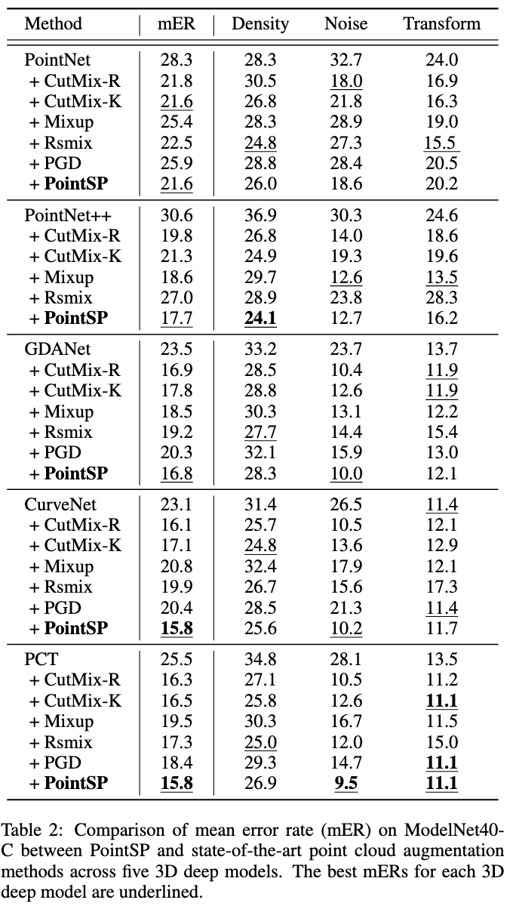
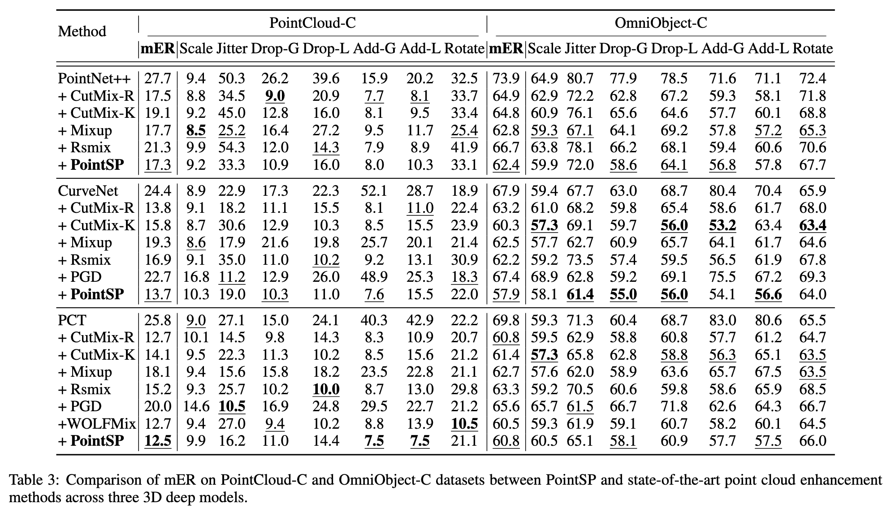
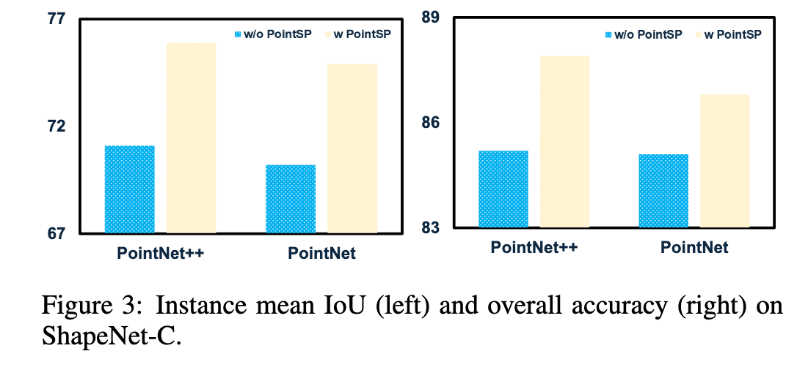
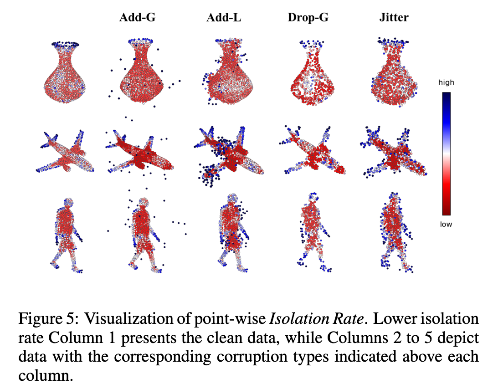
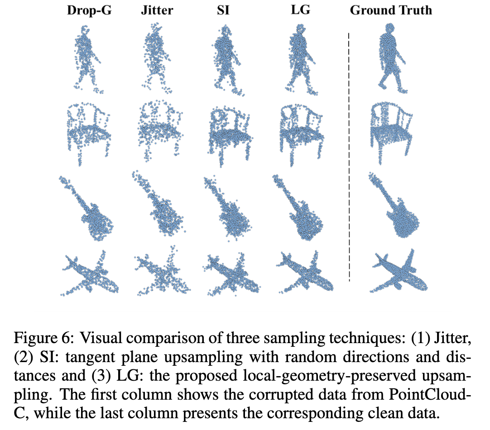
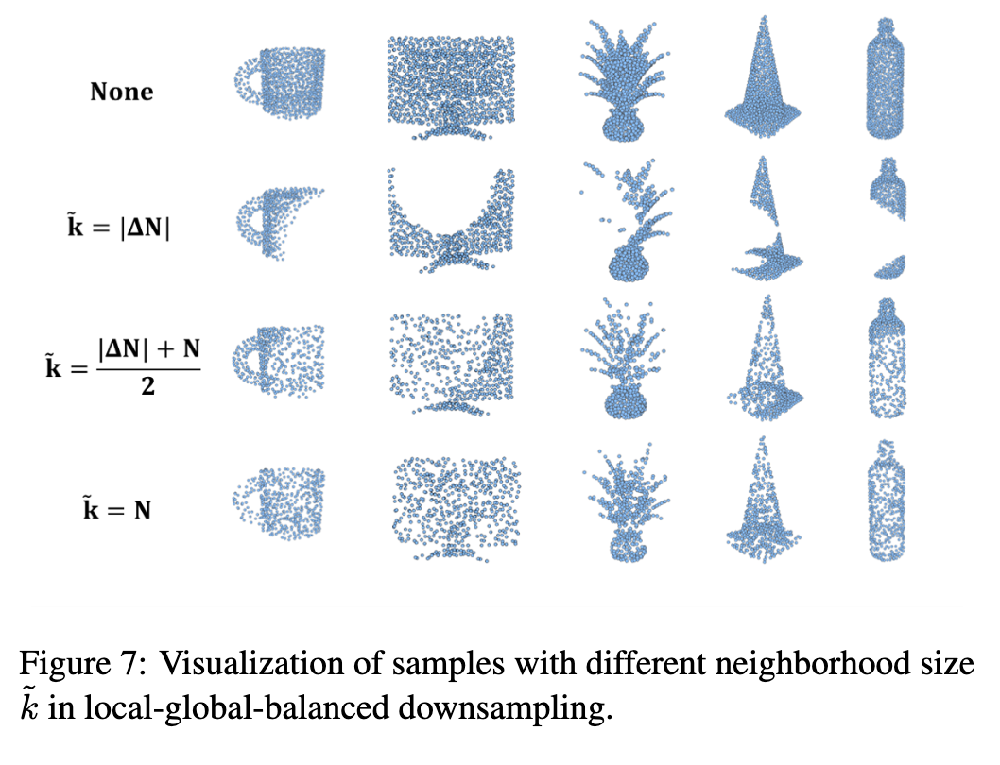

ABSTRACT
Established sampling protocols for 3D point cloud learning,
such as Farthest Point Sampling (FPS) and Fixed Sample Size (FSS),
have long been relied upon. However, real-world data often suffer from corruptions,
such as sensor noise, which violates the benign data assumption in current protocols.
As a result, these protocols are highly vulnerable to noise,
posing significant safety risks in critical applications like autonomous driving.
To address these issues, we propose an enhanced point cloud sampling protocol, PointSP,
designed to improve robustness against point cloud corruptions.
PointSP incorporates key point reweighting to mitigate outlier sensitivity and ensure the selection of representative points.
It also introduces a local-global balanced downsampling strategy,
which allows for scalable and adaptive sampling while maintaining geometric consistency.
Additionally, a lightweight tangent plane interpolation method is used to preserve local geometry while enhancing the density of the point cloud.
Unlike learning-based approaches that require additional model training, PointSP is architecture-agnostic,
requiring no extra learning or modification to the network. This enables seamless integration into existing pipelines.
Extensive experiments on synthetic and real-world corrupted datasets show that PointSP significantly improves the robustness and accuracy of point cloud classification,
outperforming state-of-the-art methods across multiple benchmarks.
RESULTS
Overall Results

Mean error rates (mERs) for the three corrupted datasets are presented in Table 1. To facilitate a comprehensive comparison, we include multiple baseline models. The results clearly indicate that the proposed PointSP significantly enhances PCT and CurveNet; mERs decrease by approximately 10% across all datasets, with the most substantial improvement observed in PointCloud-C.
Results on ModelNet40-C

Extensive evaluations of PointSP on ModelNet40-C utilizing five 3D deep models revealed its superiority. Compared to five enhancement techniques (CutMix-R [Zhang et al., 2022a], CutMix-K [Zhang
et al., 2022a], Mixup [Chen et al., 2020], Rsmix [Lee et al.,
2021], and PGD [Sun et al., 2021]), PointSP significantly improved all models. Across multiple corruption types, PointSP
consistently achieved the lowest error rates: 24.1% for “Density”, 9.5% for “Noise”, and 11.1% for “Transform”, demonstrating robustness. Notably, its unique randomized size sampling in resampling and FFPS in downsampling effectively
tackled “Density” and “Noise” corruptions, enhancing resilience and eliminating outliers, respectively. Detailed corruption results are provided in the Appendix.
Results on PointCloud-C and OmniObject-C

Table 3 compares the performance of PointSP with data augmentation methods on the PointCloud-C and OmniObject-C datasets. On PointCloud-C, PointSP enhances classification accuracy across various corruption scenarios, outperforming other methods, with the FFPS technique achieving an error rate of 7.5% under additive corruption types due to its effective outlier filtering. However, PointSP does not perform optimally under the "Jitter" corruption, where the PGD strategy excels due to its robust feature learning mechanism. For drop-type corruptions, methods like CutMix and Rsmix demonstrate superior robustness, likely due to their data-mixing strategies. On OmniObject-C, PointSP excels in improving out-of-distribution (OOD) robustness, achieving the lowest mER for CurveNet (57.9%) and the best results for "Jitter" (61.4% mER). It also outperforms other methods on PointNet++ for "Drop-G" and "Add-G" corruptions, and is highly competitive with CutMix-R on PCT. Overall, these results validate PointSP’s effectiveness in enhancing both OOD robustness and generalization. Additional implementation details and results for PointNet and GDANet are available in the Appendix.
Results for Part Segmentation

The proposed sampling protocol has been evaluated on a classification task. To demonstrate its broader applicability, we
also applied it to part segmentation tasks, which are critical
for robotic manipulation, using the ShapeNet-C dataset [Ren
et al., 2022]. The results, shown in Figure 3, clearly indicate that the proposed PointSP protocol provides a significant
improvement.
Isolation Rate

In Figure 5, we visualize the distribution of point-wise isolation rates for three example objects. The proposed rate effectively identifies boundary points and outliers, thereby enhancing subsequent point cloud sampling and improving learning robustness against corruption.
Local-geometry-preserved Interpolation

Figure 6 visually compares the results of three upsampling techniques
on four example objects. It is evident that both Jitter and
SI [Huang et al., 2022] struggle with corrupted data, particularly when it is sparse and non-uniform. In contrast, the
proposed LGP method effectively combines completion and
uniformity in the upsampling process.
Neighborhood Size \(\tilde{k}\) in Local-global-balanced downsampling

Stochastically determining the sample size is a
critical aspect of the resampling protocol. As shown in Figure 7, a smaller \( \tilde{k} \) leads to local drops ( second row), while a
larger \( \tilde{k} \) results in more global removals (last row). A stochastic \( \tilde{k} \) would closely mimic real-world corruption, contributing
to the robust improvement of the proposed protocol.
BibTex
@article{li2024enhancingsamplingprotocolrobust,
title={Enhancing Sampling Protocol for Robust Point Cloud Classification},
author={Chongshou Li and Pin Tang and Xinke Li and Yuheng Liu and Tianrui Li},
year={2025},
journal={arXiv preprint arXiv:2408.12062}
}